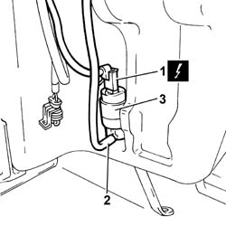

5050B20 WINDSCREEN WASHER ELECTRICAL PUMP - R+R
- Path
- Procedures > 50 AUXILIARY UNITS > 5050 SCREEN WASHERS AND HEADLAMP WASH/WIPE > 5050B WINDSCREEN WASH/WIPE > 5050B20 WINDSCREEN WASHER ELECTRICAL PUMP - R+R
- Kind
- repair procedure (removal / refitting; the operation number is the code)
- Applies to
- all engines; all production periods
- Interactive page
- https://sloeber94.github.io/elrnDB-fDct/en/#/244001318
Applies to: all engines; all production periods
 Removing
Removing
 Refitting
Refitting- Disconnect the negative battery terminal.
1. Disconnect the electrical connection for the water supply pump to the windscreen washer jets.
 | Description | Connector |
|---|---|---|
1 | Electric windscreen washer pump motor | N020 |
2. Disconnect the screen washer fluid pipe form the screen washer pump.
- Position a suitable container for collecting the screen washer fluid.
3. Release the screen washer pump which is a press-fit on the screen washer fluid reservoir and remove it.

Applies to: all engines; all production periods
Refitting
Removing- Secure the pump to the screen washer fluid reservoir.
- Connect the pipe to the screen washer pump.
- Connect the electrical connection for the water supply pump to the windscreen washer jets.
| Description | Connector |
|---|---|---|
. | Electric windscreen washer pump motor | N020 |
- Check the level of the screen washer fluid in the reservoir and top up if necessary.
- Connect the negative battery terminal.